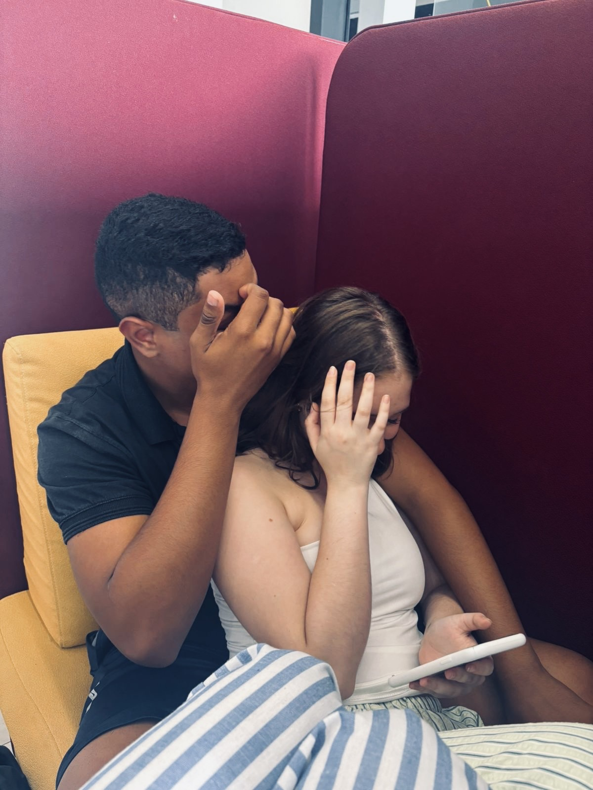
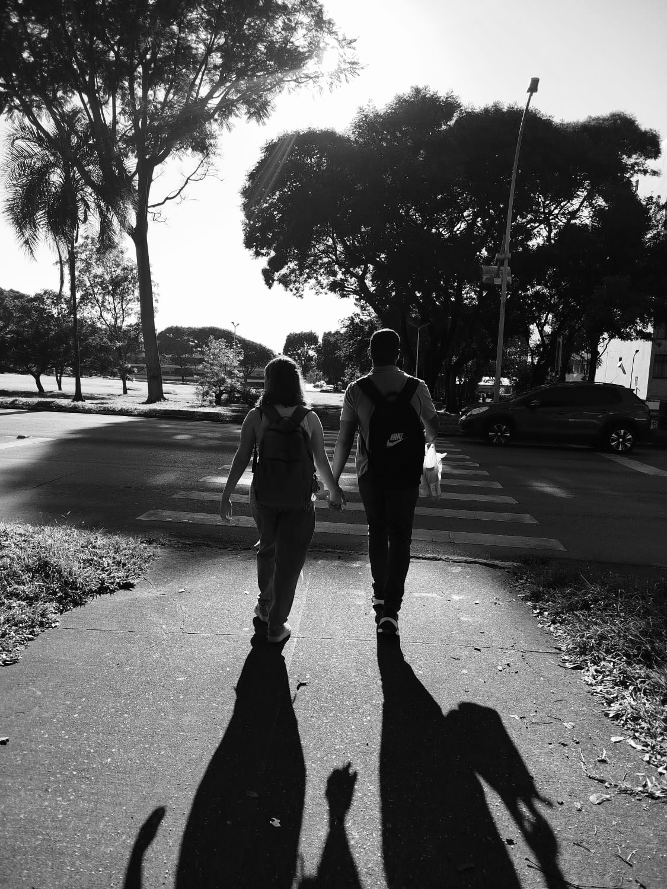
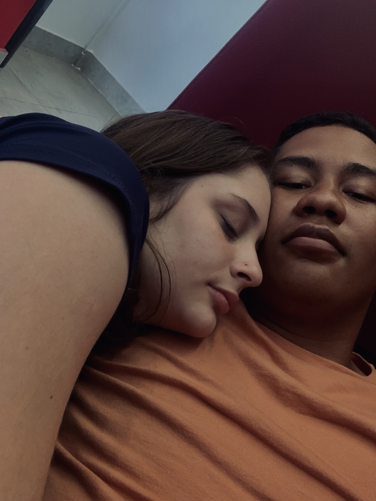
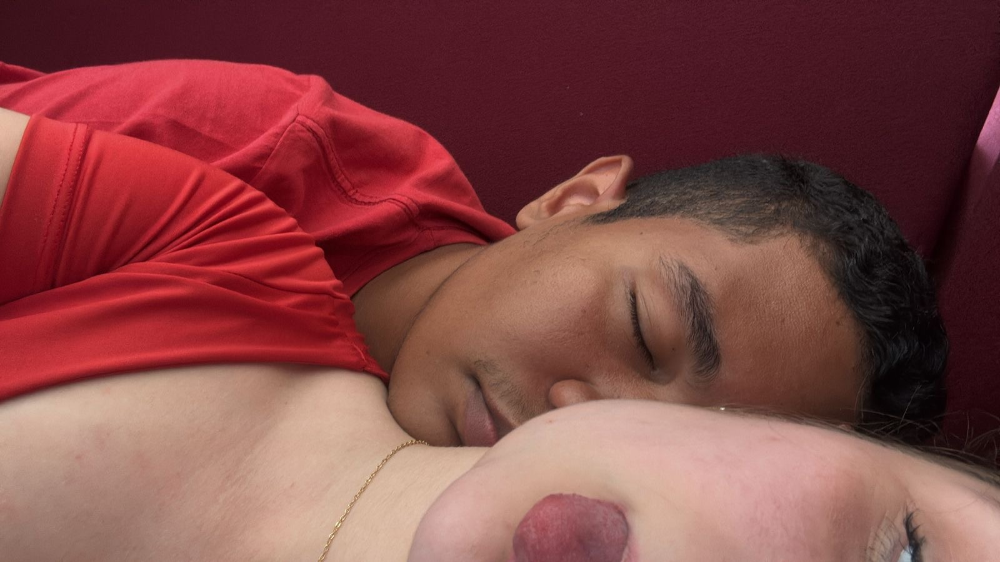
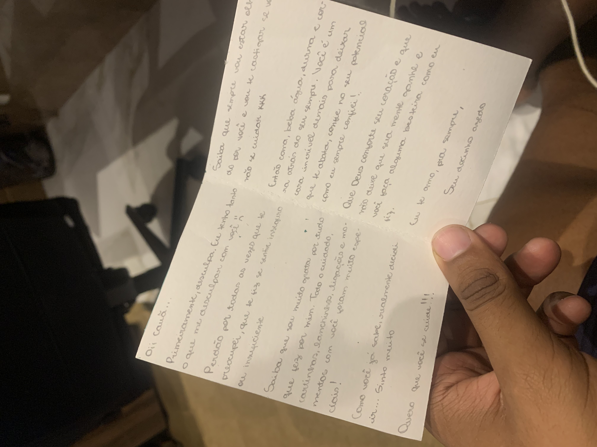

A Pessoa que me Transborda
Para o meu docinho azedo ❤️🩹
“Algumas pessoas passam pela nossa vida. Outras transbordam dentro dela.”
Antes de começar...
Existe amor que passa.
E existe amor que permanece.
Sumário
Prólogo
Quando alguém deixa de passar
e começa a transbordar.
Capítulo 1
O Efeito Borboleta
do Começo de Ano
Capítulo 2
Entre Cartas de Despedida
e Noites em Claro
Capítulo 3
O Amor Que Ainda Transborda
20 de janeiro de 2026
O dia em que ela cruzou a porta.

Capítulo 1
O Efeito Borboleta do Começo de Ano
Esta é a história do meu docinho azedo chamado Maria Clara Vasconcellos.
Eu sempre acreditei que algumas preces são ouvidas em silêncio.
“Deus... me manda alguém.”

Uma pessoa que tivesse a mesma vibe que eu.
Ou alguém capaz de mudar as minhas estruturas.
Eu só não imaginava que a resposta chegaria com nome, sobrenome, doçura e um gênio difícil.
No começo, eu apenas olho de longe, aquela timidez clássica travando qualquer comando do meu cérebro para levantar da cadeira. Será que realmente dá certo?, eu penso. Mas quanto mais eu reparo nela, mais percebo uma beleza diferenciada. Uma aura que me puxava. Penso comigo mesmo: Por que não tentar?
Aquela timidez travando qualquer reação.
“Será que isso dá certo?” "Por que não tentar?""

O plano inicial é o padrão da nossa geração: stalkear no Instagram. Resultado? Nada. Nenhuma pista, nenhuma foto pública que me dê uma abertura. O fantasma da vergonha me assombra; afinal, para ela, eu sou apenas mais um rosto anônimo no fundo da classe. Até que o destino resolve dar um empurrãozinho.
"Meu coração disparou"
Em um dia qualquer, alguém joga o contato dela no grupo de WhatsApp da sala. Eu vejo a notificação exatamente no mesmo minuto. Meu coração dá um salto. Sem pensar muito, mando uma mensagem. É ali que o nosso cronômetro começa a rodar.
"Foi ali que o nosso cronômetro começou"
Com o número em mãos, acho o perfil real do Instagram. Começo a seguir e decido que não vou ser apenas mais um seguidor fantasma; eu preciso me engajar. Quando ela abre uma caixinha de perguntas nos stories, a pressão sobe. Querendo parecer descontraído, acabo mandando a pergunta mais idiota e clichê do mundo: “Quantos anos você tem?”.
Eu rio de mim mesmo, mas funciona. Depois, as pessoas começam a perguntar sobre o cursinho ali do IMP mesmo, e eu aproveito cada brecha para puxar assunto. Eu fico mega interessado. Quero me aperfeiçoar na "Maria Clara".
"Quero me aperfeiçoar na Maria Clara."
Acho o TikTok dela. Assisto aos vídeos, pego os detalhes. Descubro, entre as postagens, qual é o chocolate favorito dela. Penso em comprar e entregar do nada, mas balançou a cabeça e guardo a ideia na gaveta. Ainda não, Cauã. Vai parecer baitola demais para quem recém começou a conversar, pondero.
Tudo caminha em passos lentos e calculados. Tem um dia em que planejei conversar com ela pessoalmente logo após o sinal da saída. Mas quando chego perto, ela está sentada conversando com dois amigos. O ciúme ou talvez o orgulho me trava. Não sou só eu que quero a atenção dela, pensou, sentindo o peso da concorrência. Finjo naturalidade, invento uma desculpa de que preciso ir embora mais cedo e bato em retirada.
"Eu preciso de um novo plano."
Mas o amor tem seu próprio ritmo. Aos poucos, as conversas começam a fluir como música. Eu me pego acompanhando cada passo dela, prestando atenção em tudo. Uma necessidade quase primitiva de protegê-la de todo o mal da rua cresce em mim. Olhando para ela, eu sinto que sou capaz de matar e morrer por essa garota.
"Até o dia do chocolate."
O dia do chocolate 🍫
Em uma conversa despretensiosa, Maria Clara comenta que está morrendo de vontade de comer um doce. No dia seguinte, acordo mais cedo. Corro atrás do chocolate que ela ama. Rodo, procuro e não encontro o exato. Frustrado, compro um "parecido".
"Torcendo para a intenção valer a pena."
Na sala entrego o chocolate para ela. O clima muda na hora. Na hora de ir embora, o nervosismo é palpável, o suor frio nas mãos, a ansiedade mastigando meu estômago..

10 de fevereiro
O grande beijo.
O mundo ao redor silencia. Tudo sai melhor do que o planejado. Os dias que se seguem são os melhores da minha vida, um borrão de felicidade. Eu me sinto vivendo um livrinho, onde cada detalhe do meu dia é descrito e dedicado a ela. Mas o medo de ser intenso demais e acabar sufocando-a começa a me rondar.
Antes mesmo do aniversário dela, eu já estou criando um mini site secreto, uma espécie de homenagem digital contando detalhe por detalhe de como ela é incrível aos meus olhos. O plano era entregar no aniversário, mas a nossa química foi mais rápida e acabamos ficando antes da data. Não aguento a ansiedade e entrego o site antes.
No dia do aniversário dela, porém, o clima pesa. Ela se machuca e nós ficamos estranhos, meio distantes. Mesmo com a tensão no ar, eu e a Mari, nossa amiga que joga perfeitamente o papel de cupido e a quem eu devo metade da minha felicidade, preparamos uma comemoração surpresa.
"Mas vieram as tempestades."
A surpresa acontece, mas as nuvens tempestuosas não demoram a chegar. Logo depois, vem a briga. A pior de todas. Aquela que destrói o peito por dentro. Choro muito naquela noite, um choro pesado, com medo de que o sonho tenha acabado ali.
Mas o dia seguinte traz o sol e a reconciliação da melhor maneira possível: a nossa primeira vez. Um momento que sela a nossa paz. Só que a minha mente me trai. No final daquele mesmo dia, com medo de me ferir, com medo de que ela rejeite a minha intensidade, acabo soltando as palavras erradas
"É melhor a gente não se emocionar muito..."
"O encontro"
Eu digo isso por mim, por pura defesa. Mas o tiro sai pela culatra e estraga tudo novamente. O que se segue é uma disputa de egos dolorosa, um silêncio cortante de saudade extrema.
O destino, contudo, gosta de brincar. No auge do orgulho e da distância, nos esbarramos no lugar mais aleatório e improvável da vida. Basta um olhar para que o ego desmorone e a gente se reconcilie mais uma vez.
Durante um bom tempo, tudo voltou a fluir bem. Mas o mar calmo dura pouco para quem carrega tempestades internas. Maria Clara começa a mudar. Os dias dela vão ficando cinzas, pesados. Ela não tem uma mente legal com ela mesma, carrega dores e problemas pessoais que começam a piorar a olhos vistos.
Minha preocupação se transforma em uma urgência constante. Vê-la sofrer dói mais em mim do que em qualquer outra pessoa. E enquanto eu a vejo lutar contra os próprios demônios, uma certeza se fixa no meu peito, a mesma certeza desde o início: eu dou a minha vida para ver essa garota bem.
"É impossível descrever os meus extremos. Sou capaz de hesitar diante de uma aranha indefesa que provavelmente tem mais medo de mim do que eu dela e, no instante seguinte, segurar um revólver com total frieza."
Capítulo 2
Entre Cartas de Despedida e Noites em Claro
A vida de Maria Clara não é fácil. Desde os seus treze anos, ela carrega feridas profundas, problemas pessoais silenciosos e dolorosos que, às vezes, transbordam na forma de marcas na pele. Ela se machuca. E ver aquilo acabou comigo. Eu sou capaz de dar a minha vida em troca da dela, sem hesitar por um segundo sequer.
"E ver ela sofrendo acabava comigo."
A Clara sempre postando nas redes sociais, e eu, guiado por um sexto sentido que só quem ama de verdade possui, ligo cada pontinho. Ela sempre menciona em conversas e em escritos que faz cartas.
"Quem ama desenvolve um sexto sentido."
Minha mente conecta os fatos: a indiferença repentina, o olhar distante, os sinais de socorro disfarçados de silêncio. A preocupação me pega de jeito. Eu passo noites inteiras em claro, com o teto do quarto como testemunha do meu desespero. Eu a amo como nunca amei ninguém na vida, e a ideia de largá-la, mesmo por um minuto, me aterroriza. Meu maior e mais profundo medo tem nome e formato: receber uma ligação dizendo que ela se foi para sempre.
Com medo. Muito medo.
"Meu maior medo? Perdê-la."
Essa mulher é o meu porto seguro. A pessoa que traz paz para o meu caos, que tem o poder de fazer o meu mundo cinza ficar completamente colorido apenas com a sua presença.
28 de Abril
22h24
O minuto que mudou a minha vida.

As cartas de despedida de Maria Clara vêm parar nas minhas mãos. No momento em que meus olhos passam por aquelas linhas escritas por ela, eu desmorono. Meu chão some, meu equilíbrio desaparece. Sou tomado por um pânico cego e saio correndo em direção a onde ela está, desesperado com a decisão que ela pode tomar.
"Eu desmoronei..."
No meio do caminho, recebo uma mensagem dela dizendo que voltou para casa. Mesmo assim, meu corpo não para. Corro até o portão do condomínio dela. Fico ali, encarando as grades, o coração batendo na garganta. Penso em entrar, em invadir, mas o medo de arrumar uma confusão ainda maior com a família dela me trava.

Aquele exato dia 28 de abril, às 22h24 muda a minha vida para sempre.
A partir daquele minuto, minha atenção redobra. Eu sou um vigia do bem-estar dela. Todos os dias, de joelhos, peço a proteção de Deus, porque vejo de perto que ela é capaz de cumprir o que escreve. Meu coração fica despedaçado, mas a minha vontade de salvá-la de todo o mal que habita o mundo é maior. Minhas noites continuam sendo em claro, limpando lágrimas de medo no escuro.
"Somente pedindo para Deus cuidar dela"
Eu sempre rezo por ela, e ainda rezo, incansavelmente. Em absolutamente todas as missas que vou, na hora do pedido sagrado, o meu pensamento é exatamente o mesmo desde o dia 20 de janeiro. Não mudo uma vírgula. Peço com toda a força da minha fé para que Deus sempre a proteja de todo mal, para que a gente dê certo e, acima de tudo, que Ele tire de dentro dela toda e qualquer vontade maligna que insiste em habitar na mente dela. Minhas preces são o meu escudo secreto sobre a vida dela.
As coisas parecem piorar a cada tique-taque do relógio. Vem o episódio da overdose, o ápice do meu terror, até o dia em que ela precisa ser internada. Mesmo com ela no hospital, sob cuidados médicos, eu não consigo me conter; eu preciso saber dela vinte e quatro horas por dia. Nas visitas, meu corpo trava de tensão. Eu nunca sei o que realmente se passa ali dentro, se ela está bem ou ruim, porque a Clara nunca me fala a verdade. Ela sempre tenta fingir que está tudo ótimo, mascarando a própria dor para não me preocupar. E é no meio desse turbilhão, com a mente exausta e o medo me cegando, que eu faço a maior cagada da minha vida..
"A maior cagada da minha vida? Eu larguei a Clara."
É um impulso de momento, uma reação covarde de defesa. Eu não quero fazer aquilo, mas a minha mente age por conta própria, sem me consultar. A pessoa a quem faço tantas promessas de amor eterno e proteção... eu acabo decepcionando. Afasto a única pessoa no mundo que me faz bem, agindo feito moleque por medo de mim mesmo, das minhas confusões e da intensidade do que vivemos.
Capítulo 3
O Amor Que Ainda Transborda
E a verdade sobre isso tudo? A verdade crua e nua é que eu não sei nem por onde começar, porque falar de você, Clara, sempre mexe com tudo o que existe aqui dentro. Você é a única pessoa que transborda em mim, da forma mais pura e avassaladora possível. Não importa o momento, seja na tristeza mais profunda, na felicidade mais boba, no ápice do nosso amor ou no desejo e no tesão mais ardente, tudo em mim se volta para você. Ninguém mais consegue causar isso. Você é a única que preenche e transborda cada canto da minha alma.
Eu ainda penso em nós.
Você ainda mora em mim.
Eu me apaixonei antes do beijo.
E a verdade sobre isso tudo? A verdade crua e nua é que eu não sei nem por onde começar, porque falar de você, Clara, sempre mexe com tudo o que existe aqui dentro. Você é a única pessoa que transborda em mim, da forma mais pura e avassaladora possível. Não importa o momento, seja na tristeza mais profunda, na felicidade mais boba, no ápice do nosso amor ou no desejo e no tesão mais ardente, tudo em mim se volta para você. Ninguém mais consegue causar isso. Você é a única que preenche e transborda cada canto da minha alma.Desde o dia em que nos conhecemos no IMP, algo mudou. Você vai preenchendo espaços que eu nem sei que estão vazios, vira parte fixa dos meus pensamentos, dos meus dias e de todos os planos que traço para o futuro. Eu amo você em todos os tempos, Clara. No passado das nossas memórias, no presente intenso da saudade e em cada detalhe do amanhã. Amar você nunca é algo pequeno.
Seu abraço virou paz.
Saudade do teu cheirinho de baunilha.
Meu dia não começa quando o sol nasce, ele começa de verdade quando eu tenho você perto. Quando sinto o teu abraço e encontro a paz naquele encaixe que é sob medida para mim. Meus momentos favoritos no mundo são aqueles em que a gente fica deitado, abraçado, em silêncio, sentindo só a presença um do outro sentindo aquele cheirinho de Baunilha. É como se, por alguns instantes, o universo finalmente estivesse no lugar certo e o resto do mundo deixasse de existir.

Eu sou completamente refém do teu sorriso.
Sinto falta das pequenas coisas. Das conversas no meio da tarde, das risadas bobas, das ligações, do teu "jeitinho doidinha" que tem o poder de me fazer sorrir até nos meus piores dias. Você tem uma luz própria, uma forma única de deixar tudo mais leve. Você não percebe, mas eu me apaixono por você de novo todos os dias, nos detalhes mais simples. E o seu sorriso? Eu sou completamente refém dele. Tem algo ali que ilumina os meus dias mais cinzentos.
Mesmo depois de tudo...
Às vezes, eu só paro para te admirar em silêncio. Quando olho nos seus olhos, parece que o mundo inteiro se cala. O tempo desacelera, tudo perde a importância e só existe nós dois. Eu encontro a minha paz no meio do caos só por estar perto de você. E é exatamente isso o que ainda dói tanto. Porque mesmo depois de tudo, mesmo sabendo dos meus erros, das palavras ditas no calor do impulso, das vezes em que deixo o ego e o medo falarem mais alto e acabo te machucando... o sentimento não foi embora. Eu me arrependo amargamente das palavras rudes, dos momentos em que não sei me expressar e da dor que te causo sem perceber a dimensão do estrago. Você nunca merece carregar o peso das minhas confusões.
o sentimento nunca foi embora.
Mesmo longe, eu ainda te sinto em tudo. Nas músicas que tocam, em horários específicos do dia, no silêncio do meu quarto, nas lembranças que insistem em voltar quando eu menos espero. Tem dias em que acordo esperando uma mensagem sua. Dias em que fico olhando nossas fotos antigas, como se nelas exista alguma resposta ou um caminho de volta. Eu finjo para os outros que estou bem, que superei, mas a verdade é que existe uma parte enorme de mim que está presa em você, no que somos, no que sentimos e no amor que construímos.
Eu sei que talvez as coisas pareçam difíceis agora, e isso dói mais do que consigo explicar em páginas de papel. Mas independente do rumo que a nossa vida tome, eu preciso que você saiba, você marca a minha história de um jeito que ninguém jamais vai conseguir igualar. Existem pessoas que passam... e existem pessoas que ficam, mesmo na ausência. E você fica, cravada em mim.
Obrigado por tudo, meu docinho azedo. Pelos abraços que são casa, pelas risadas, pelos momentos em que o mundo parece pequeno perto do tamanho do nosso sentimento. Obrigado por me mostrar um amor tão intenso, tão verdadeiro e tão raro. Talvez eu não demonstrei da melhor forma, talvez eu falhei e fui moleque, mas nunca duvide: o amor que eu sinto por você é a coisa mais real da minha vida.
Você é a única pessoa que transborda em mim..
Eu nunca dei flores para nenhuma mulher na minha vida. Sempre guardei esse gesto no meu peito, como uma promessa silenciosa “eu só entregaria flores para a pessoa que eu amasse de verdade, com toda a minha alma.” E no dia 10/07 essas flores serão suas elas chegaram em sua casa. Elas são a prova física de que você é essa pessoa, de que o meu amor por você não cabe mais em palavras e transborda no mundo real.
Volta comigo? ❤️🩹
Eu prometo cuidar de você, fazer de tudo pela gente, e ajudar a curar todas as suas feridas e os seus medos. No final de tudo, eu nunca quero te largar. Eu sempre quero te trazer para mais perto, mas fui fraco, fui moleque, e me arrependo disso todos os dias. Eu quero, e vou ser a melhor pessoa do mundo para você. Eu não quero que nada acabe entre a gente.. Até porquê eu fiz uma grande promessa...
Eu amo você. Amo muito, muito mesmo. E estou aqui, de braços abertos, pronto para reescrever o nosso amanhã. E o 4° capítulo dessa história, que sejam infinitamentes..
Com todo amor que existe aqui, para o meu docinho azedo. ❤️🩹